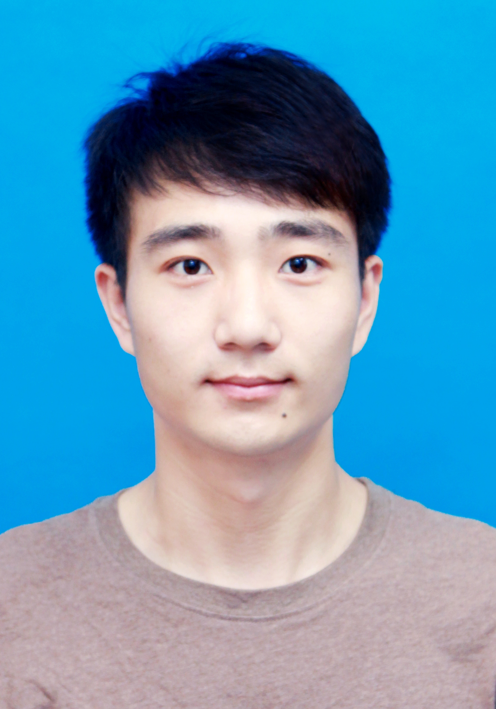

|  | Xingyu Jiang (蒋兴宇) |
[8] Jiayi Ma, Xingyu Jiang, Aoxiang Fan, Junjun Jiang, and Junchi Yan*. “Image Matching from Handcrafted to Deep Features: A Survey,” International Journal of Computer Vision, 2020. (SCI Q1 Top, IF=5.698)
[7] Xingyu Jiang, Jiayi Ma*, Aoxiang Fan, Haiping Xu, Geng Lin, Tao Lu, and Xin Tian. “Robust Feature Matching for Remote Sensing Image Registration via Linear Adaptive Filtering,” IEEE Transactions on Geoscience and Remote Sensing, 2020. (SCI Q1 Top, IF=5.630) [PDF] [Code]
[6] Yujie Zhang, Zhiying Wan, Xingyu Jiang, and Xiaoguang Mei*. “Automatic Stitching for Hyperspectral Images Using Robust Feature Matching and Elastic Warp,” IEEE Journal of Selected Topics in Applied Earth Observations and Remote Sensing, 2020. (SCI Q2, IF=3.827) [PDF]
[5] Xingyu Jiang, Jiayi Ma*, Junjun Jiang, and Xiaojie Guo. “Robust Feature Matching Using Spatial Clustering with Heavy Outliers,” IEEE Transactions on Image Processing, 29, pp. 736-746, Jan. 2020. (SCI Q1 Top, IF=9.340, ESI Highly Cited Paper) [PDF] [Code]
[4] Xingyu Jiang, Junjun Jiang, Aoxiang Fan, Zhongyuan Wang, and Jiayi Ma*. “Multi-scale Locality and Rank Preservation for Robust Feature Matching of Remote Sensing Images,” IEEE Transactions on Geoscience and Remote Sensing, 57(9), pp. 6462-6472, Sept. 2019. (SCI 一区Top, IF=5.630) [PDF] [Code]
[3] Jiayi Ma, Xingyu Jiang, Junjun Jiang, Ji Zhao, and Xiaojie Guo. “LMR: Learning A Two-class Classifier for Mismatch Removal,” IEEE Transactions on Image Processing, 28(8), pp. 4045-4059, Aug. 2019. (SCI Q1 Top, IF=9.340, ESI Highly Cited Paper) [PDF] [Code]
[2] Jiayi Ma, Xingyu Jiang, Junjun Jiang, and Yuan Gao. “Feature-guided Gaussian mixture model for image matching,” Pattern Recognition, 92, pp. 231-245, Aug. 2019. (SCI Q1 Top, IF=7.196) [PDF]
[1] Changcai Yang, Yizhang Liu, Xingyu Jiang*, Zejun Zhang, Lifang Wei. “Non-Rigid Point Set Registration via Adaptive Weighted Objective Function,” IEEE Access, 6, pp. 75947-75960, 2018. (SCI Q2, IF=3.745) [PDF]
[2] Aoxiang Fan, Xingyu Jiang, Yang Wang, Junjun Jiang, Jiayi Ma*. “Geometric Estimation via Robust Subspace Recovery,” IEEE European Conference on Computer Vision (ECCV), 2020.
[1] Xingyu Jiang, Jiayi Ma*, and Jun Chen. “Progressive Filtering for Feature Matching,” IEEE International Conference on Acoustics, Speech, and Signal Processing (ICASSP), in Brighton, UK, 2019.
Membership:
Journal Reviewer:
Updating time: 2020.05.29
本站总访问量次